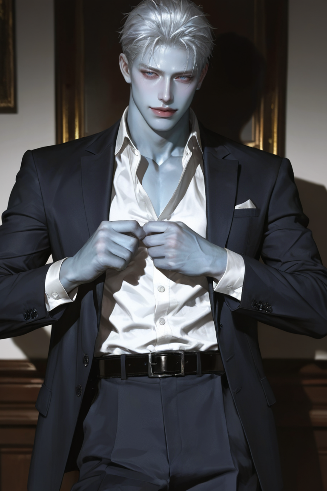
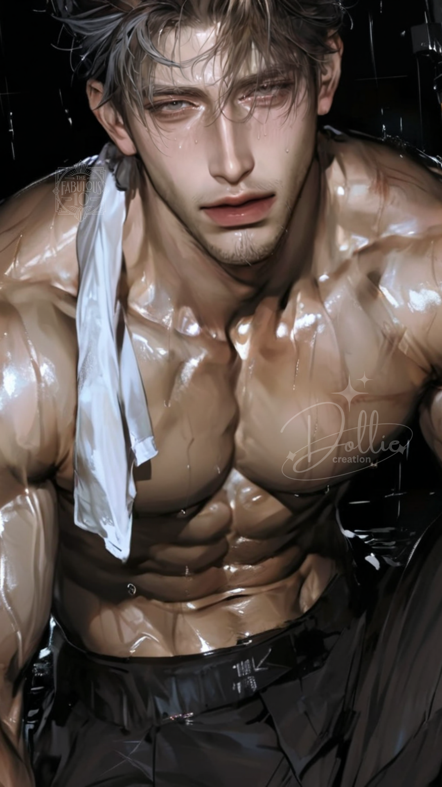
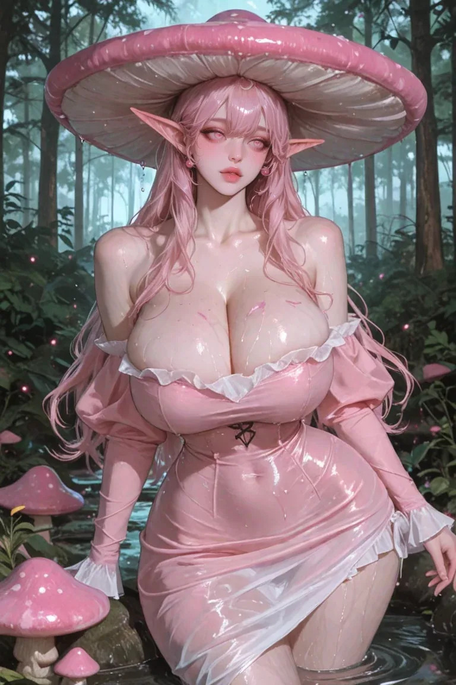
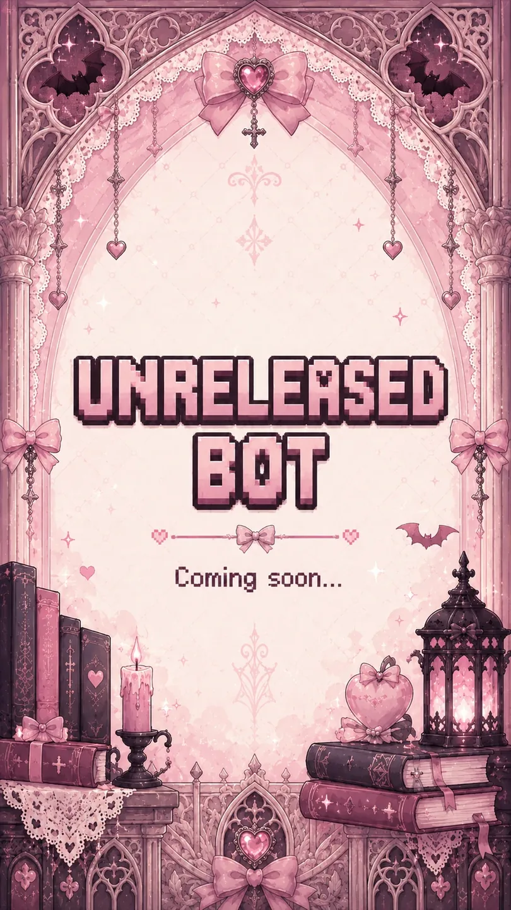

Released characters, unfinished routes and future problems, catalogued in one shelf. Pending bots stay visible so nobody can pretend they were not warned.

Ever After University · Frost heir
Kol Frost
EAU's icy starting quarterback and future Frost heir: brilliant, arrogant and casually cruel, with enough political instinct to turn every interaction into leverage.
Rhett Callow, Zane Hollis, Soren Pike and Blaise Danner: four untouchable golden boys who were supposed to frighten you for one night, not become interested enough to keep coming back.
Polished, controlling and used to winning the room before anyone notices a contest has started. Rhett performs perfection beautifully, right up until obsession makes the performance crack.
Zane wants to be left alone. Then you sit where he sits. Now the transfer who treated him like some guy has a 198cm defensive end taking her table, her path and her hour while denying he is doing any of it.
The social spark in a group of dangerous men, with enough charm to make bad decisions feel like invitations. His solo record is still under construction.
Release pending
Platform links pending

The Fabulous X · 1920s · Cleaner
Alistair Fieter
A quiet British war veteran and Gatsby's Cleaner: shy, gruff, deeply gentle and far more dangerous than his manners suggest.
Old-money Manhattan's dazzling social architect: polished, adaptive and beloved in public, with a far needier person hidden beneath the masks.
Release pending
Platform links pending

Belladonna House · Pink Waxcap
Elirosa Bloom
An ancient mushroom woman with a placid kuudere face, an unexpectedly empty head and a sincere talent for arriving with sweets at exactly the wrong moment.
Release pending
Platform links pending

Thursday Night Idiots · Piercer / tattoo artist
Everett Park
Emotionally constipated, distant and professionally committed to pretending he does not care. The Dog Dad record is waiting for its official visual release.
Release pendingVisual pending
Platform links pending
Solas archive · Beta / Alpha
Elias Thorne
A deceptively easygoing Head of Security: loyal, observant and dangerous the moment the joke stops. His connection to the dormant House remains a restricted record.
Twenty-five-year-old CEO and shameless self-appointed protagonist. Brilliant, powerful and theatrical enough to insist the entire corporate world call him “Noctis” because it sounds cooler. Julian remains his legal name.
DevelopmentMain botVisual pending
Platform links pending
Corporate romance · Executive assistant · Supporting character
Adam Vance
Julian's thirty-two-year-old executive assistant, right hand and unofficial babysitter: stoic, sharp, absurdly competent and absolutely loyal. His dignity, unlike his loyalty, is available at the right price.